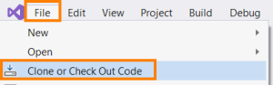
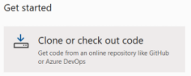
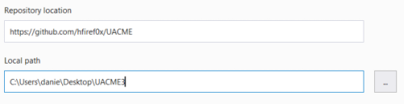
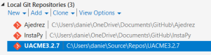
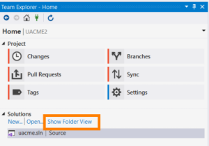
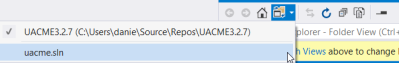
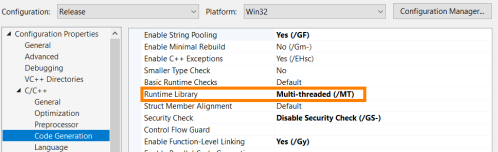
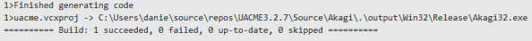

Download and Compile
32 bit: https://github.com/DenFox93/Compiled-programs/raw/main/Akagi32.exe
64 bit: https://github.com/DenFox93/Compiled-programs/raw/main/Akagi64.exe
Clone from a Repo
1. Open Visual Studio(install it if you do not have it) and we have to clone the project from github
 or 
2. Set the link of the repo and the Local Pathe where will be saved the repo

3. Double click on the UACME project:

4. Show folder view:

5. Switch view to the structured Visual Studio sln file

6.We have to select the option:
Release → to build without runtime dependencies
Win32 or x64 → if we want build it for 32 or 64 bit systems

7.Now we have to right click on Akagi →


8. We need to set the runtime library to static link
C/C++ -> Code Generation → Runtime Library: Multi-threaded (/MT)

9. Only select(left-click) the module Akagi

10. and Build → Build Akagi

After that we have Build(compiled) the project we will find Akagi32.exe file in:
..\UACME-master\Source\Akagi\.\output\Win32\Release\Akagi32.exe
